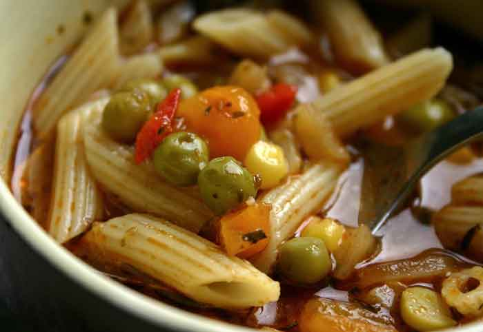

Precios
Lasaña

La preparación de la lasaña varía según la región en la que se prepare consiste en un tipo de pasta con forma de lámina cuadrada que se coloca en forma de bloque y se reyena con carne, pescado o verdura. Entre lámina y lámina también lleva bechamel, y para terminar abundante queso con el que se le dará su aspecto habitual gratinado.
$ 5.00
Risotto
Esta comida se prepara a base de arroz y de queso parmesano, sin embargo, hoy en día existen muchas recetas de risotto con distintos ingredientes.. Nuestra recomendación, un risotto con bonito… con esta receta podrás apreciar la cremosidad típica del risotto italiano
$ 4.25
Carpaccio

El Carpaccio es actualmente una receta famosa a nivel internacional, pero ¿qué tiene de especial este plato?, pues que fueron los italianos quienes pusieron de moda eso de comer carne cruda.
$ 7.00
Sopa Minestrone

Esta especialidad de la cocina italiana es similar a una sopa de verduras, con la única diferencia de que también contiene pasta y en algunas recetas carne, pollo o jamón. Los ingredientes más utilizados para esta sopa son zanahorias, cebollas, judías, apio y tomates, a partir de ahí podemos decidir el tipo de pasta y los añadidos a nuestro gusto.
$ 6.50
Pizza
El origen de la pizza tiene mucho que ver con el pan en Italia, ya que en la antigua Roma se acostumbraba a hacer pan de forma circular y cortado en porciones. Años más tarde, a esta masa de harina se le añadirían otros ingredientes como salsa de tomate y queso mozzarella, pero hoy en día la pizza admite una gran variedad de ingredientes como son frutas, verduras carne, pescado, marisco y embutidos.
$ 8.00
Ensalada Capresse

Como en Italia no todo es pasta prueba esta ensalada capresse con ingredientes tan básicos como tomate, mozzarella fresca, unas hojas de albahaca y un chorrito de aceite de oliva. Por muy sencilla que parezca, la combinación de estos ingredientes nos da como resultado una ensalada que destaca por su sabor a fresco
$ 5.50
Ossobuco
El ossobuco es un plato de carne tradicional de Milán que se trata de un estofado de jarrete de ternera sin deshuesar. Esta receta ha ido adquiriendo fama en los últimos años porque a diferencia de otros guisos esta carne contiene la grasa justa para un resultado jugoso. Para su elaboración se emplean ingredientes como zanahorias, cebollas y vino blanco, y minutos antes de que finalice la cocción se le añade también salsa de tomate…
$ 5.00